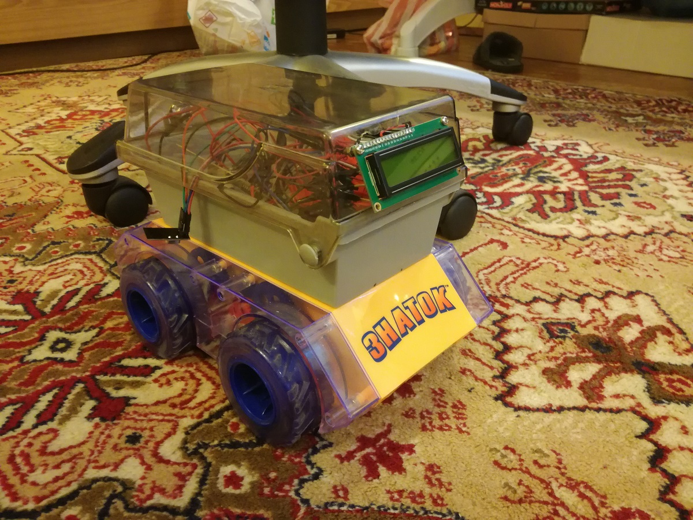
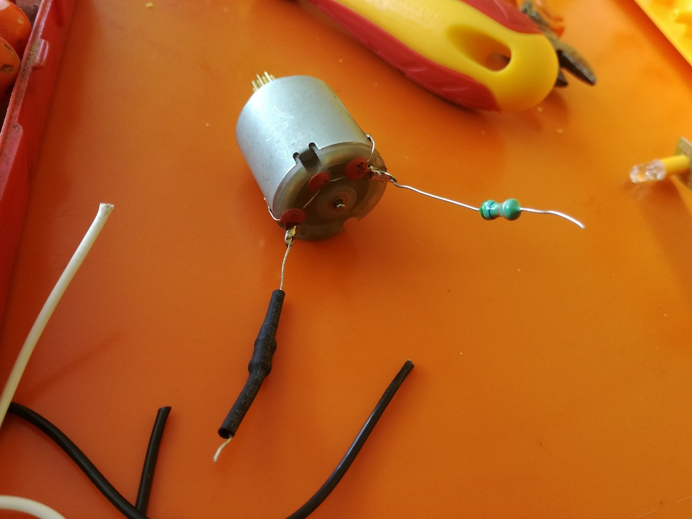
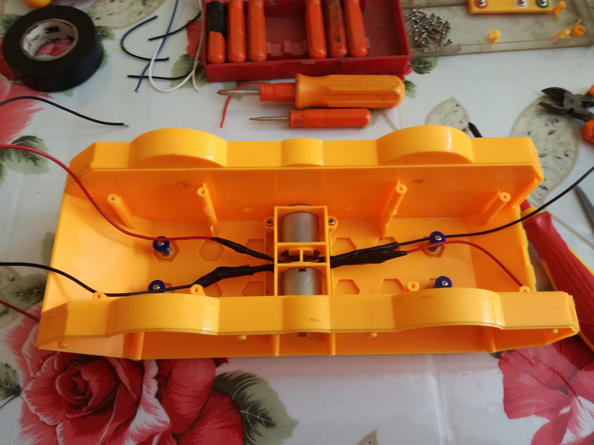
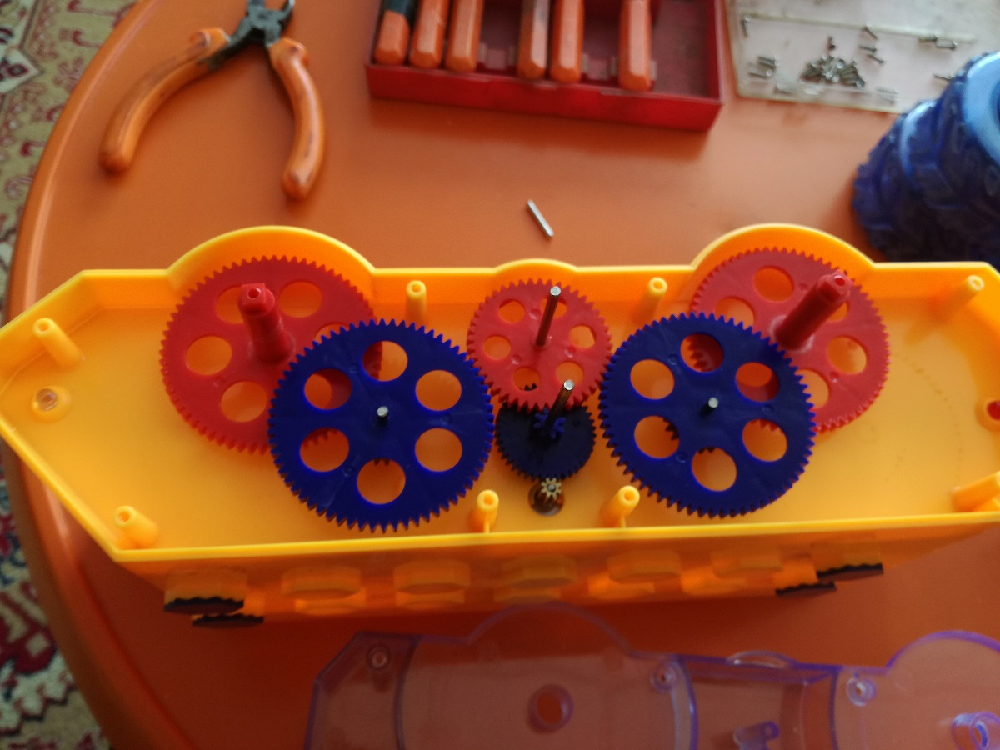
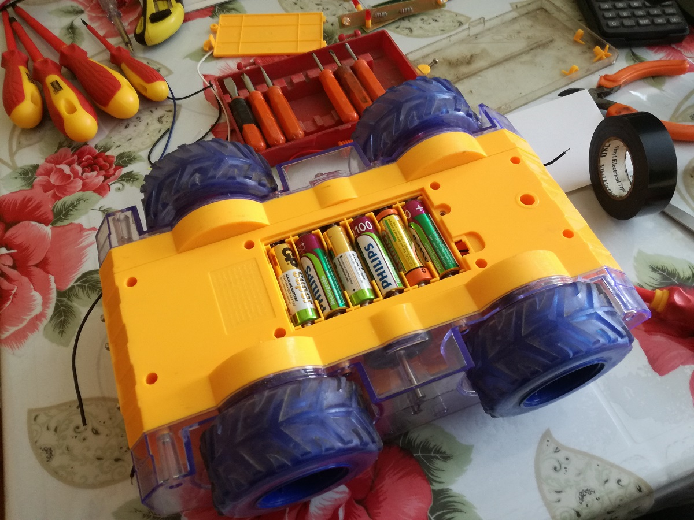
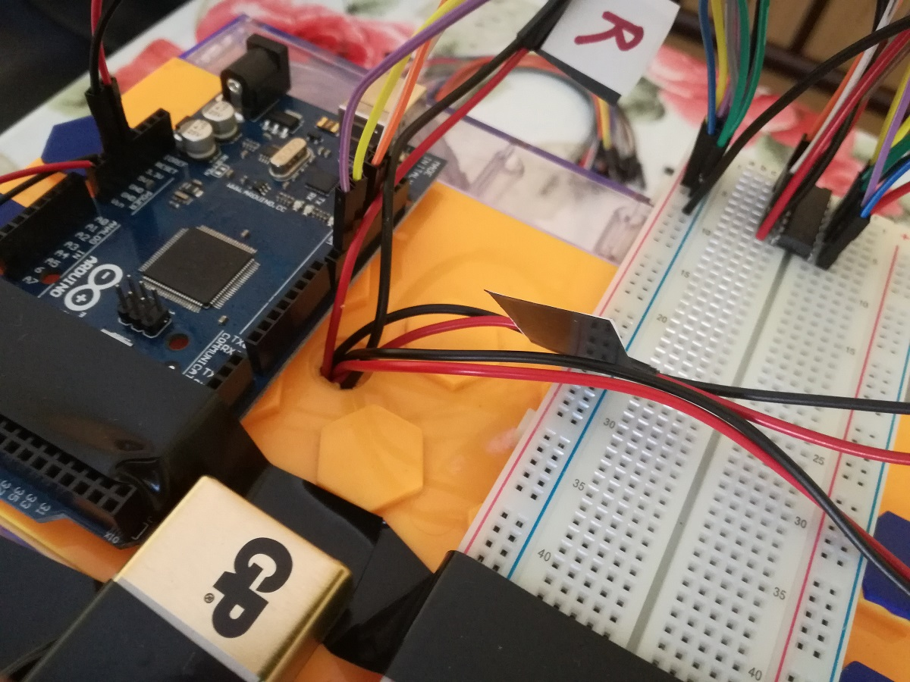
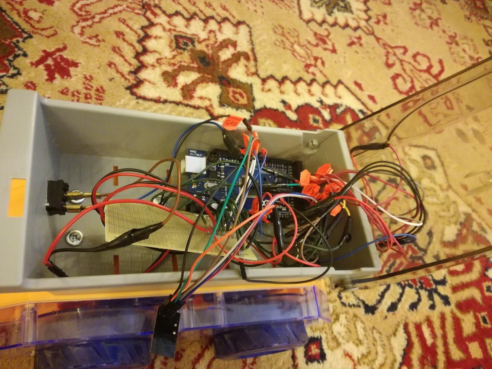
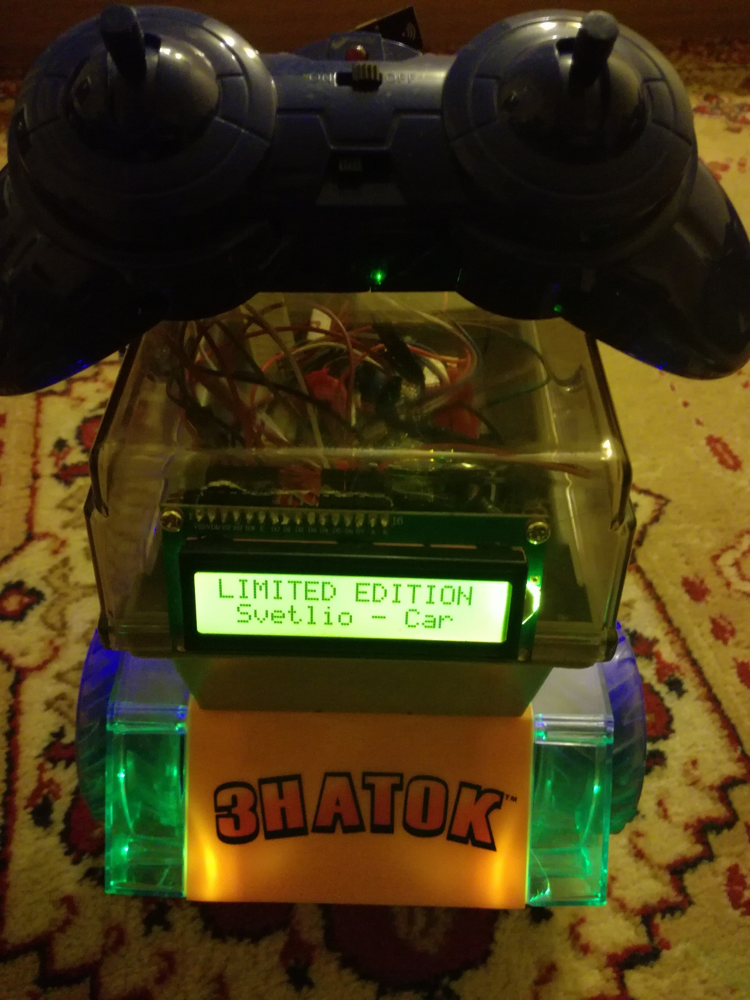
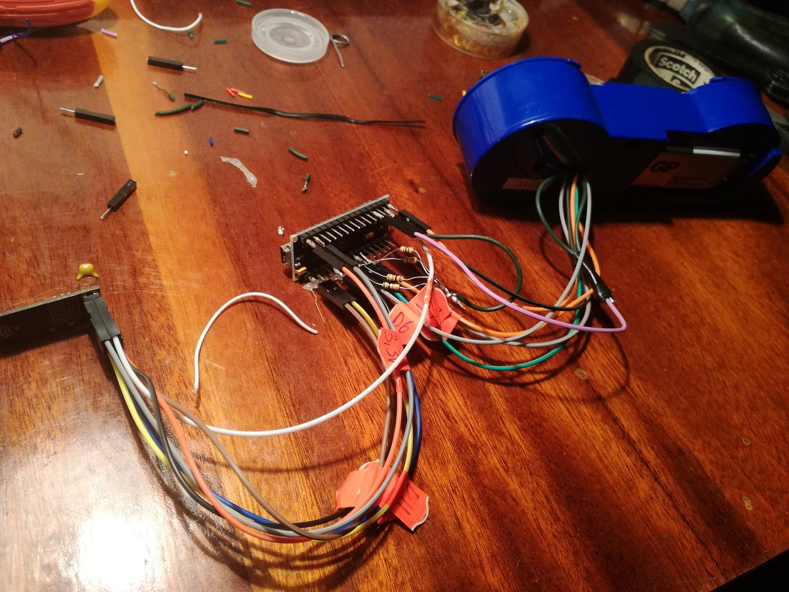

SOME OF MY HOBBY PROJECTS
Тhis is project of "remote control car toy". I made this project when i have to graduate from "Technical University of Varna" actually this was part of my thesis.
There are two electric power motors, one motor spinning the left wheels of the chassi and the other one spins the right wheels.
I used one old broken toy car for the chassi.
Power motors transmits motion to the road wheels through gear reducers.
The power supply of the car is from six batteries of type "AA". Batteries are connected in series to generate 9 volts.
Microcontroller "Arduino Mega" was used to control the car. The L293D - 16-pin Motor Driver IC was used to control a set of two DC motors simultaneously in any direction. The L293D is designed to provide bidirectional drive currents of up to 600 mA (per channel) at voltages from 4.5 V to 36 V.
NRF24L01 wireless transceiver module was used for wireless connection between the car and the remote control. NRF24L01 operates in the 2.4GHz ISM frequency band. It is used to communicate data wirelessly which is specially designed for ultra-low power applications. All the electronics parts i put into an old diskette box type FDD 1.44MB. The wiring harnes are not very nice and tidy, but unfortunately there was no enough time to do everything nice and tidy.
I put an LCD 16x2 (Liquid Crystal Display ) screen on front of the car to print some info about operation status of the car and never the less to looks more funny and strange.
For the remote control was used microcontroller "Arduino Nano" and of course NRF24L01 wireless transceiver module. For power supply of the remote control was used one 9 volt battery.
Svetlin Stoychev
About me
hi my name is Svetlin Stoychev. This web site is one of my hobby projects, nothing impressive just something about me. I have master degree of "Electronics" from technical university town of Varna. Before university i was studing at special school for "internal combustion engines", i like to repear cars as well. When i was 24 year old, become fireman and for the nex 10 years this was my job. And my dream like kid become tru, i was fireman. After this i went to United Kingdom there i worked in a garage like car electrician and mechanik. In Uk i worked like lorry driver on big truck as well. In all the time when i have free time and energy i try to spend time on my other hobby computers and more specificly lerning programing lenguages and try to do some own projekts.